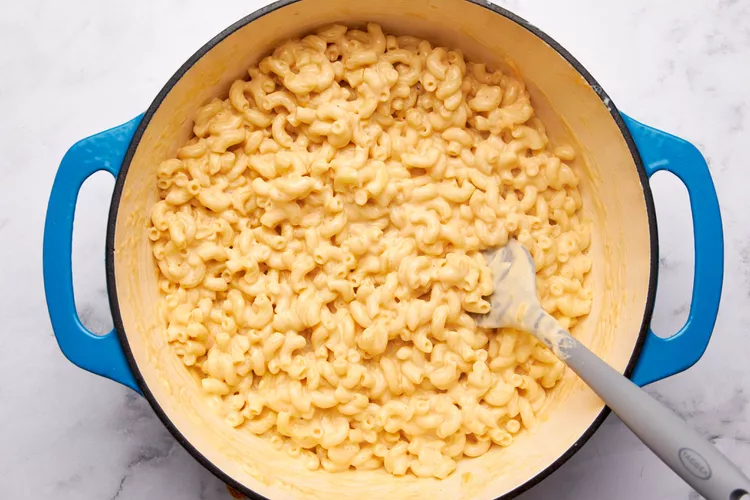
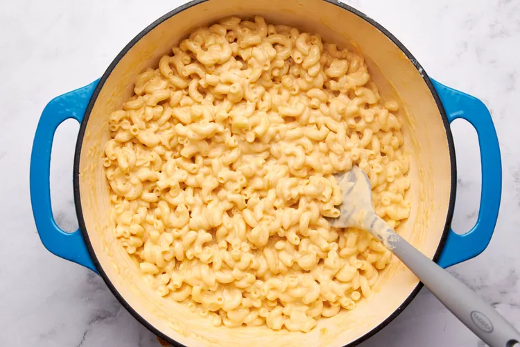

Prepare the toping (optional):
Melt the butter in a 10-inch Dutch oven or other heavy, deep pot over medium heat.
Add the crushed crackers, black pepper, and kosher salt and stir to coat with the melted butter.
Continue to toast over medium heat, stirring often, until golden brown, 2 to 4 minutes.
Begin preparing the mac and cheese:
In the same pot, melt the butter over medium heat. Once melted, add the ground mustard,
pepper, and cayenne (if using). Stir to combine with the butter and lightly toast until fragrant, 15 to 30 seconds.
Take care to not let the spices or butter begin to brown. Add the water, half and half, and kosher salt to the butter
mixture and stir to combine. Bring the mixture to a boil over high heat, uncovered.
Cook the pasta:
Once boiling, stir in the elbow macaroni, adjusting the heat as needed to maintain a rolling boil (but not boil over).
Continue to cook uncovered, stirring every minute or so, until the pasta is tender and the liquid is reduced enough to
reveal the top layer of elbows, 6 to 9 minutes. The liquid mixture should just be visible around the edges of the pot,
but still with enough to pool when you drag a spatula through the pasta. Remove from the heat.
Add the cheeses:
Add the cream cheese to the pasta mixture and stir
until almost completely melted. Add the shredded cheddar and
Monterey Jack and stir until the cheeses are completely
melted and saucy.
 

Season and serve:
Taste the mac and cheese. Season with more salt and pepper as needed.
Serve immediately topped with the toasted Ritz topping, if using. Leftover mac and cheese
can be stored in an airtight container in the refrigerator for up to 5 days.